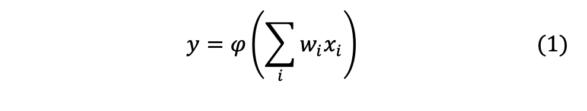
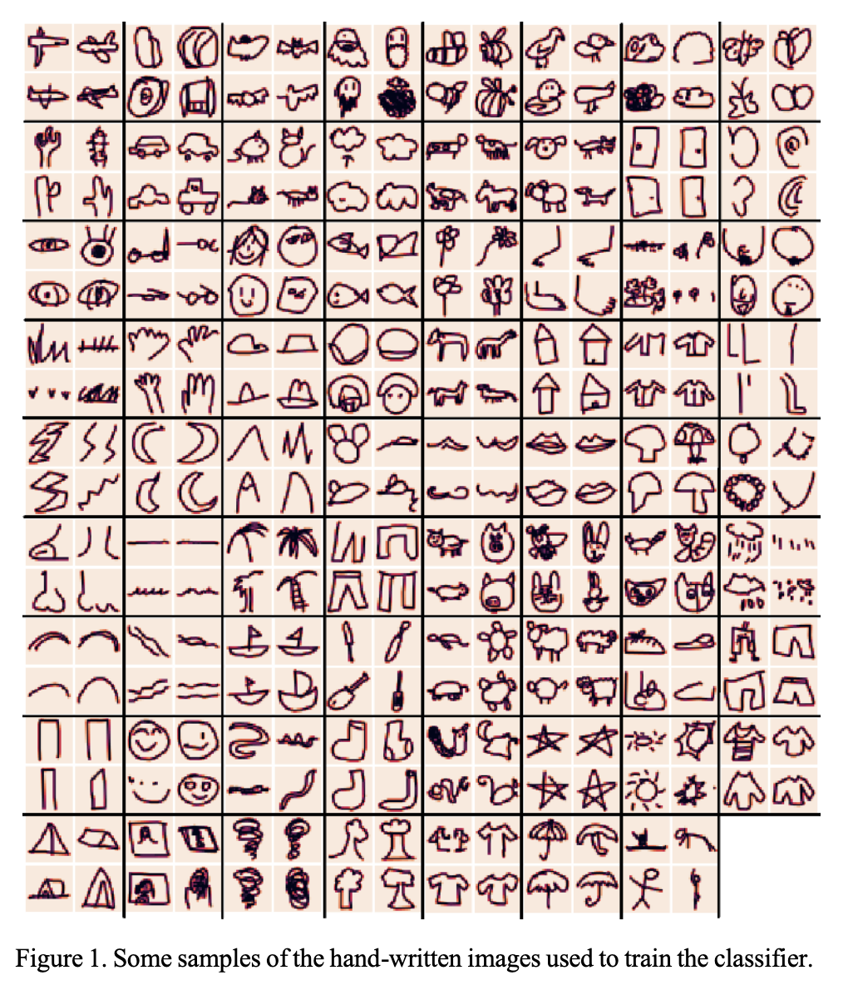
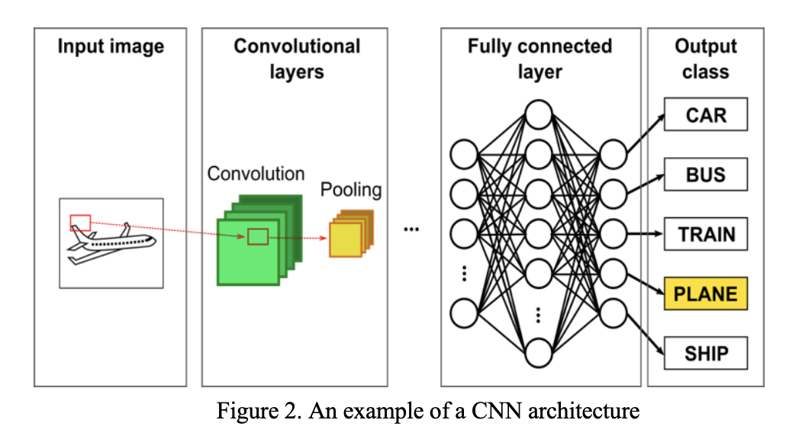
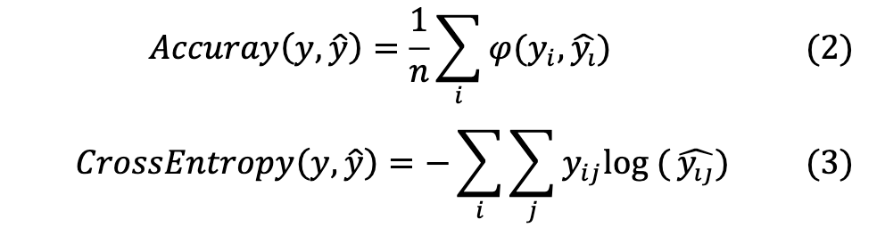
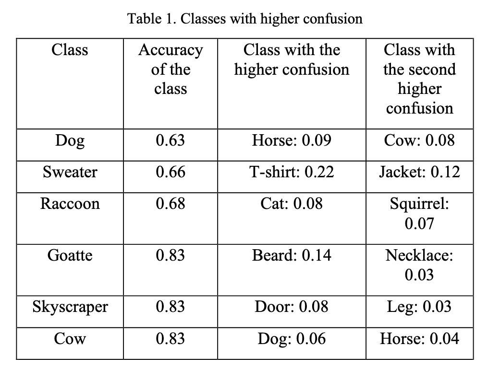
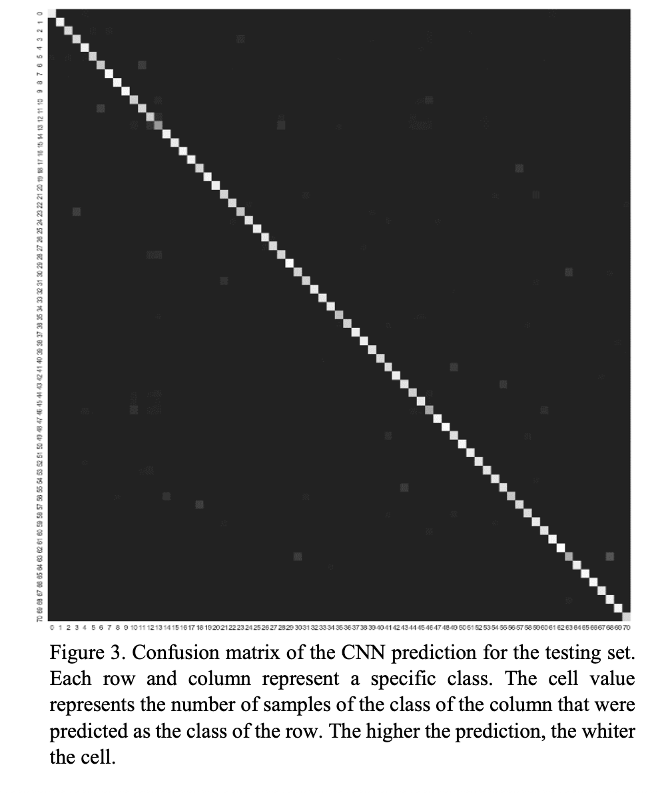
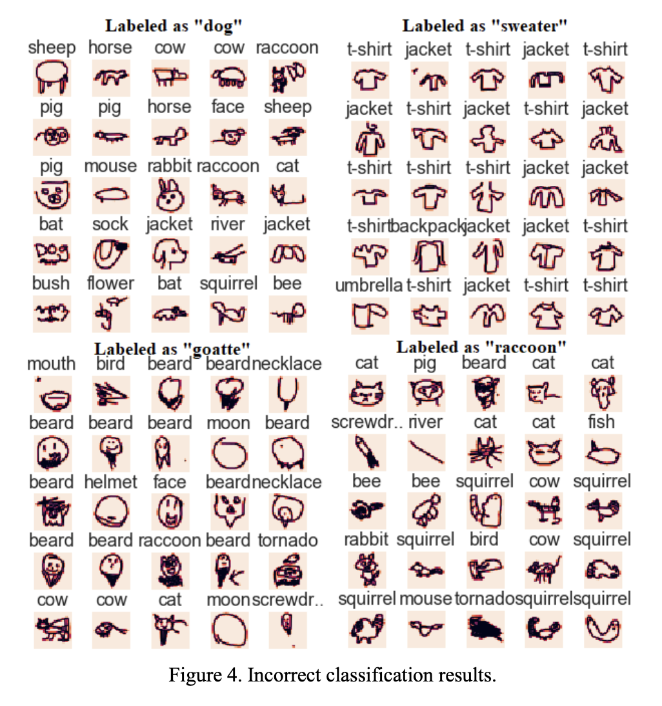
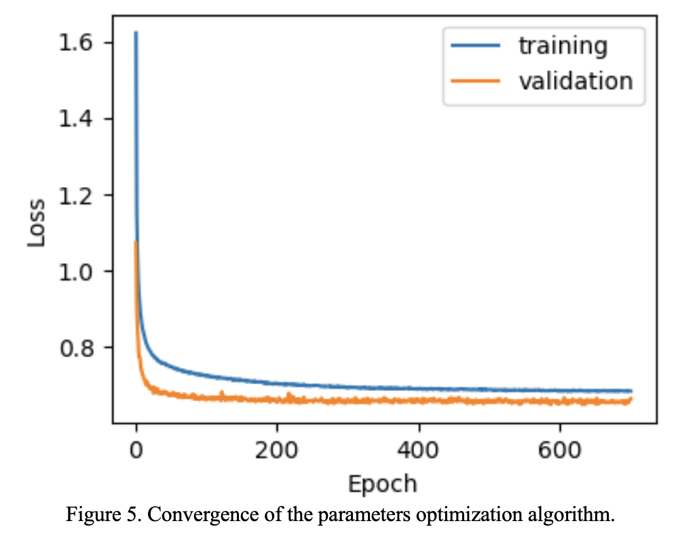

| Sergio E. Valenzuela Universidad Panamericana Facultad de Ingeniería Aguascalientes, México sevalenzuela@up.edu.mx | Juan B. Calabrese Universidad Panamericana Facultad de Ingeniería Aguascalientes, México bernardo.calabrese@up.edu.mx | Josue Ortiz-Medina Universidad Panamericana Facultad de Ingeniería Aguascalientes, México jortizm@up.edu.mx | Claudia N. Sánchez Universidad Panamericana Facultad de Ingeniería Aguascalientes, México cnsanchez@up.edu.mx |
|
Abstract— Convolutional Neural Networks (CNN) have
been used since the late 80’s. Nevertheless, until the 2000’s when
they begun to be popular for image classification tasks, thanks
to the improvements in computation performance of electronic
devices and new algorithms development. However, most of the
classifiers are oriented towards the processing of real-world
images. This document presents a CNN for hand-written
drawings recognition. The dataset consists of 710,000 images
that correspond to 71 different classes, each one with around
10,000 samples. The dataset was randomly divided into a
training set (80%) and a testing set (20%). The CNN classifier
achieved an accuracy of 84.79% for classifying the samples on
the testing set. The classification results showed perfect
identification for 10 classes, whereas 6 classes were poorly
classified. It is foreseen that the results presented here can fuel
applications where identification of hand-made drawings are
critical, such as neuropsychological tests.
Keywords—deep learning, convolutional neural network, artificial intelligence, hand-written drawings I. INTRODUCTION Convolutional neural networks (CNN) have been applied to visual applications since two decades ago at least [1], [2]. Nevertheless, besides some disperse reported applications, the CNN remained relatively inactive until the middle of 2000’s, when the developments on computational and data science, along with the availability of diverse databases complemented with advanced algorithms, lead to their rapid improvement and use [3]. This work aims to contribute to the CNN application to the classification of images based on hand- written drawings, an area that has been somewhat unexplored. Image classification can be defined as the process of image categorization within one or more predefined classes, and is one of the fundamental problems on computer vision and related applications, such as localization, detection and segmentation [4]–[7]. Image classification is an easy task for humans, but a difficult one for a computer. Some of the typical complications include object shape dependence on point-of- observation and object variability [8]. Now, it can be considered that image classification is a specific application of pattern recognition and classification, which is generally defined as the mapping over a big group of data, from which smaller sub-groups or classes of data can be arranged according to specific criteria. The pattern classification process is basically composed of two parts: one, characteristics extraction phase, and second, decision making or classification phase. During the characteristics extraction phase, the largest dimension is transformed into a set of metrics, termed characteristics. These metrics thus represent intrinsic information about the patterns. One of the most important features of CNNs is that they include both parts of image classification, which means that they can perform the features extraction and their classification, making their implementation an easy task . |
Currently, most of the classifiers and convolution techniques aim to the processing of “real” images, i.e., images from scenes in the 3D world we interact. This kind of approaches in fact make these techniques suitable for robotic and automation applications. Nevertheless, an increasing amount of reports demonstrate the feasibility of using CNN for hand-written images, with interesting advances in the field of text and languages recognition [9]–[11]. Moreover, another interesting and potential field where hand-written images recognition and classification could have an important impact is human health, given the potential of automated interpretation of human writing or drawings from the psychology point of view, or more precisely, in the development of neuropsychological tests (NT) [12], [13]. Some works already report the use of machine learning (ML) methodologies for improving the detection and diagnosis of neurodegenerative diseases, describing the analysis of images from specialized techniques such as computerized tomography (CT), magnetic resonance imaging (MRI), etc. [14], [15]. Fortunately, ML has also been explored for easier, faster, and cheaper alternatives for tests and diagnosis by means of hand-writing recognition and classification [12], [16], [17]. NT represent a specialized area within clinic psychology. Psychologists use the contextual information from these tests for diverse kinds of evaluations (e.g., a child with learning difficulties or a patient suffering of a neurodegenerative disease). As it is previously mentioned, there are several medical procedures such as CT, MRI or positron-emission tomography (PET), which can show graphically parts of the brain with physiological disorders. Nonetheless, NT can reveal deep aspects of the whole brain functioning. Unfortunately, some of these procedures are lengthy, and composed of integral exams which include a wide variety of subtests like the Halstead-Reitan [18] or Luria- Nebraska [19]. One common feature of these tests is the use of figures or specific forms of drawings. The scoring in these tests are based in a variety of possible errors that the subjects can commit while copying the figures, including missing details, collision or superposition, inability of shape completion (such as circles or squares), disproportionate sizes and angles, or misorientations. Given that the score patterns within these subtests can be used for specific cognitive failures identification, an automated tool for hand-written drawings identification and classification could provide a key advantage for the developing of NT based on ML. As mentioned, most of the previous works on this topic have been oriented towards the recognition and classification of characters, within the language scope. Some seminal reports consider the recognition of specific features in hand-written drawings [20], which will be used as a basement for further develop a CNN strategy for drawings classification. This work aims to provide an efficient ML methodology for the classification of hand- written sketches, which would provide a solid framework for further developments towards their automatic interpretation. The results demonstrate a high potential of CNN architectures for drawings recognition and classification, which ultimately could be applied to a wide variety of tests, including NT for automated psychological evaluations. |
|
The rest of the manuscript is organized as follows. Section II shows the methodology of this work, starting with the data description and then comes how the image classification was performed. The results and discussion are presented in section III, with the concluding remarks summarized in section IV. II. METHODOLOGY A. Data description The hand-drawing images used in the experiments were taken from a dataset of Quick, Draw! a game that recollects hand-written draws from millions of users around the world. [21]. The dataset consists of 710,000 images that correspond to 71 different classes each one with around 10,000 samples. The list of classes are airplane, backpack, bat, beard, bee, bird, bush, butterfly, cactus, car, cat, cloud, cow, dog, door, ear, eye, eyeglasses, face, fish, flower, foot, garden, goatee, grass, hand, hat, helmet, horse, house, jacket, leg, lightning, moon, mountain, mouse, moustache, mouth, mushroom, necklace, nose, ocean, palm_tree, pants, pig, rabbit, raccoon, rain, rainbow, river, sailboat, screwdriver, sea_turtle, sheep, shoe, shorts, skyscraper, smiley_face, snake, sock, squirrel, star, sun, sweater, tent, The_Mona_Lisa, tornado, tree, t-shirt, umbrella, and yoga. Figure 1 shows an example of the images. B. Image classification As it is mentioned in Section I, CNNs have been successfully used for image classification, and its power has been probed in different contexts. For that reason, it was decided to use a CNN for the classification of drawing images. CNNs are advanced networks due to the unidirectional way they manage the information, from the inputs toward the output. CNNs are, as it occurs in general with artificial-NN (ANN), inspired in biological NN. The basic unit in an ANN is a neuron, where a set of numerical inputs 𝑥𝑖 are weighted by a corresponding weight 𝑤𝑖 . As can be seen in Equation 1. The results are added, and finally, an activation function 𝜑 is applied to yield the final result 𝑦 . The objective of the activation function is to create nonlinear models.   |
The brain visual cortex, which consists of alternate neuronal layers with different complexity, constitutes a recurrent model for CNNs architectures. These architectures can thus include specific layers for specific functions as convolution, categorization, and sampling, grouped within modules of one or more neuronal layers fully connected. Then, a deep-CNN (DCNN) is built by stacking individual modules. Figure 2 shows a typical architecture of a CNN used for image classification; an image is provided as an input for the DCNN, normally consisting of several convolution and grouping stages. From that point, the outcomes become the inputs for one or more fully connected NN layers. Finally, the last fully connected NN layer is in charge of labeling the classes. The used CNN architecture is composed of 8 layers. Each layer is described as follows:
The total number of parameters of the CNN is 249,415. The optimization algorithm used for training the CNN was Adam [22], where the loss was defined as cross-entropy for maximizing the accuracy. If 𝑦 and 𝑦̂ are two vectors in ℝ𝑛 that contain the real and predicted labels for 𝑛 samples, the accuracy is defined in Equations 2, where 𝜑(⋅,⋅) is a function that returns 1 if their inputs are equal or 0 otherwise. On the other hand, considering 𝑦 and 𝑦̂ as two matrices in ℝ𝑛𝑘, where 𝑛 are the number of samples and 𝑘 the number of classes. The matrix 𝑦 contains the real labels, the row 𝑖 that represent the sample 𝑖 has only one 1 in the column that corresponds to the real class, the rest of the cells in that row are 0. The matrix 𝑦̂ contains the predicted labels that correspond to values between 0 and 1 that can be seen as the likelihood to each sample belongs to every the class. Using these matrices, the cross entropy is defined as Equation 3, where 𝑖 and 𝑗 represent the sample and the class, respectively. For calculating the performance of the CNN classifier, the images were randomly divided in 568,000 samples for training (80%) and 142,000 (20%) for testing. In addition, when training the CNN, the training set was randomly divided into training (90%) and validation set (10%). |
|
III. RESULTS AND DISCUSSION The metric used for measuring the CNN performance is accuracy. It counts the percentage of labels that the classifier predicts correctly. Its value ranges from 0 to 1, being 1 a perfect prediction. The CNN architecture described in section II achieved an accuracy of 0.8479. Considering a multiclass problem of hand-written drawings with a high number of classes, 71 in this case, the obtained accuracy is quite relevant. The confusion matrix is visually presented in Figure 3 where, as it was expected, the diagonal matrix has high values, meaning an almost perfect identification. The classes with high confusion are the ones showed in Table 1. On the other hand, the classes that were predicted with an accuracy of 1.0 were screwdriver, eye, rainbow, star, sun, cactus, the Mona Lisa, tornado, backpack, and house. It is interesting to compare these results with other related with hand-written drawings recognition by CNN. For instance, accuracies as high as 89% were achieved, but for a small number of classes for sketch- made human expressions [20]. This highlights the importance of this work, where 71 classes were recognized and classified. Figure 4 shows some incorrect classification as a result of the test process, but that can be considered as correct answers since the images really seem to be what the classifier is detecting on the image. This is shown in the confusion matrix, as it can observed in Figure 3. Most of the wrong classification cases are the result of various classes that have high similarity with others. The CNN could be improved reducing the classes that are similar on aspect (e.g. sweater, t-shirt and jacket), choosing the one with the best accuracy result, and reducing the number of classes from 5 to 10.   |

Figure 5 shows the convergence of the parameters' optimization algorithm for CNN. It can be observed that the results are reached around 200 epochs. In addition, it can be verified that CNN is not overfitting the training set because the loss of the validation set is lower than the training loss. IV. CONCLUSIONS This document presents a methodology based on deep learning for classifying hand-written drawings. The dataset was composed of 710,000 images of hand-written drawings of 71 different classes. The list of classes are airplane, backpack, bat, beard, bee, bird, bush, butterfly, cactus, car, cat, cloud, cow, dog, door, ear, eye, eyeglasses, face, fish, flower, foot, garden, goatee, grass, hand, hat, helmet, horse, house, jacket, leg, lightning, moon, mountain, mouse, moustache, mouth, mushroom, necklace, nose, ocean, palm_tree, pants, pig, rabbit, raccoon, rain, rainbow, river, sailboat, screwdriver, sea_turtle, sheep, shoe, shorts, skyscraper, smiley_face, snake, sock, squirrel, star, sun, sweater, tent, The_Mona_Lisa, tornado, tree, t-shirt, umbrella, and yoga. Each class contains around 10,000 samples. The dataset was randomly divided into training (80%) and testing set (20%). The classifier was proposed as a CNN composed of 8 layers, with a total of 249,415 parameters. The optimization algorithm was ADAM. The performance of the classifier was an accuracy of 84.79%, being the following classes the one with a perfect performance: screwdriver, eye, rainbow, star, sun, cactus, the mona lisa, tornado, backpack, and house. On the other hand, the classes with lower performance are dog, sweater, raccoon, goatte, skyscraper, and cow. However, their performance can be explained because the labels are related. For example, the class dog was confused with horse and cow, and, the class sweater was confused with t-shirt and jacket. |
|
As future work, we plan to use the CNN presented in this document for identifying key hand-written drawings to interpret neuropsychological tests. ACKNOWLEDGMENTS The authors would like to acknowledge the computational facilities of the Faculty of Engineering, Universidad Panamericana campus Aguascalientes. REFERENCES [1] Q. Z. Wu, Y. Le Cun, L. D. Jackel, and B. S. Jeng, “On-
line recognition of limited-vocabulary Chinese character
using multiple convolutional neural networks,” in
Proceedings - IEEE International Symposium on Circuits
and Systems, 1993, vol. 4, pp. 2435–2438. |
[12] P. Khatamino, I. Canturk, and L. Ozyilmaz, “A Deep
Learning-CNN Based System for Medical Diagnosis: An
Application on Parkinson’s Disease Handwriting
Drawings,” in 2018 6th International Conference on
Control Engineering and Information Technology, CEIT
2018, 2018. |